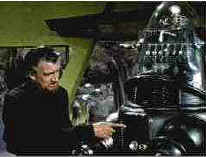

|
Forbidden Planet/B-,B- |
|
MGM-UA/1956/98m/ANA 2.35 |
So, Robby the Robot is cute you say. Yes, Anne Francis has a darling figure and is dressed quite scantily for 1956. But Forbidden Planet, a high profile Scifi flick in widescreen doesn't stand up to time that well. It's rather quaint in technique and scripting and years of exposure to movie science fiction have left the mental machinations of Dr. Morbius a distant memory in the blaze of current technology. Forbidden Planet plays more like a minor Star Trek episode and the wonder at special effects that may have greeted 1956 audiences does not warrant the excess minutes used to tell the rather thin story.
 |
|
Morbius shows off Robby.MGM.-UA |
Dr. Morbius and his beautiful
daughter Altaira has created a small island of paradise for
themselves on a remote planet many moons away from Earth. A
spaceship travels to the far away planet to discover the fate of
the colonists. They are greeted by the mysterious Morbius and
daughter. Before you have a chance to marvel at what the good
doctor and his daughter have created, a mysterious force begins
attacking the crew of the space expedition. Will they survive?
Can they discover what the monster is?
Walter Pidgeon brings an erudite
presence to Morbius and Anne Francis lends innocence. Leslie
Neilson, long before going "naked," plays Commander
Adams with a fixed expression of gravity.
Though it's not indicated on the box,
the DVD offers an anamorphic 2.35 aspect ratio as well as
standard widescreen and Pan and Scan. The image is sharp and the
color more vivid than its laser incarnations on this transfer of
Forbidden Planet. Still, there's more than optimal
grain and the picture could have packed more punch. The
2-channel stereo plays fine
| . |
The
Feature
Archive has articles ranging from Akira
Kurosawa to Blonde
Bimbos, The
Heistmasters and Frank
Darabont.

Click on the image above for a "dream interview"
with director John
Ford.
Check out the Movie
Poster Archive for short bios and images of
Susan Hayward, Kirk Douglas, Katharine Hepburn and many more.
This month's featured star is Gregory
Peck.

Imaging Science Foundation promotes proper
standards in home theater viewing. ISF trained technicians offer
monitor calibration services to consumers. The difference in
a properly calibrated monitor can be astounding. Click on
the image to find an ISF member near you.
HOT
LINKS
National
Preservation Film Board
Learn about what this organization is doing to preserve our film
heritage. Want to know the guidelines for proper handling of
film? This is the place.
Home
Theater Reference Reviewing System

When you read a DVD review it's of utmost importance to know
what equipment is being used to evaluate quality. Click on the
projector to find out more.